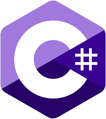

Python
Lenguaje de alto nivel, sencillo y legible, muy usado en ciencia de datos, inteligencia artificial, automatización, desarrollo web y scripting. Tiene una gran comunidad y muchas librerías disponibles.

Los lenguajes de programación son sistemas formales utilizados para expresar instrucciones que una computadora puede ejecutar. Son como idiomas que permiten a los desarrolladores comunicarse con todas las máquinas para lograr tareas específicas. Existen muchos lenguajes de programación, cada uno con sus propias características y usos, y la elección del lenguaje adecuado depende del tipo de proyecto y las necesidades del desarrollador.
Lenguaje de alto nivel, sencillo y legible, muy usado en ciencia de datos, inteligencia artificial, automatización, desarrollo web y scripting. Tiene una gran comunidad y muchas librerías disponibles.
Lenguaje orientado a objetos, muy usado en aplicaciones empresariales, móviles (Android) y sistemas grandes. Su lema es "escribe una vez, corre en cualquier parte" gracias a la Máquina Virtual de Java (JVM).

Extiende a C con programación orientada a objetos. Es usado en videojuegos, software de alto rendimiento y sistemas que requieren control del hardware.

Lenguaje de Microsoft orientado a objetos. Usado principalmente en desarrollo de aplicaciones para Windows y juegos con Unity. Funciona sobre la plataforma .NET.
Lenguaje del lado del cliente en el desarrollo web. Permite crear páginas web dinámicas e interactivas. También se usa en el backend con Node.js.

Superset de JavaScript que añade tipado estático. Mejora el desarrollo a gran escala y facilita la detección de errores en tiempo de desarrollo.

Lenguaje elegante y legible, orientado a objetos. Es conocido por el framework web Ruby on Rails, que facilita el desarrollo rápido de aplicaciones web.

Lenguaje de scripting muy utilizado para desarrollo web del lado del servidor. A pesar de las críticas, sigue siendo la base de muchos sitios web, incluidos WordPress y Facebook en sus inicios.

Lenguaje moderno de Apple para el desarrollo de aplicaciones iOS, macOS, watchOS y tvOS. Es rápido, seguro y fácil de usar.

Lenguaje creado por Google, simple y eficiente. Ideal para servidores, microservicios y aplicaciones concurrentes. Muy rápido y con buen manejo de la concurrencia.

Lenguaje de sistemas enfocado en la seguridad y el rendimiento sin recolector de basura. Es ideal para software que requiere alta confiabilidad.

Lenguaje de consulta estructurado. No es un lenguaje de programación general, pero se usa para gestionar y consultar bases de datos relacionales.